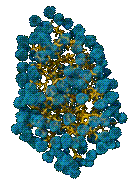

Diffusion and distance Diffusion |
| |
| Water's ability to form hydrogen bonds has profound effects on its properties and its interactions with other molecules. |
| 
|
When a molecule dissolves in water, the water molecules (blue) form a shell around the dissolved molecule, which in this case is a protein Water is the solvent, the dissolved molecule is the the solute. What is if solute cannot make H-bonds? Such molecules are not soluble in water - they are hydrophobic. Cells use partially hydrophobic molecules to build barriers - known as bilayer membranes - to regulate the flow of hydrophilic materials into and out of the cell. |
Movement
through membranes: There is a relatively simple apparatus that we can
use to generate such a bilayer. |
We will take a thin piece of teflon with a hole in it. Teflon is a high molecular weight carbon-fluorine polymer. While C-F bonds are highly polar, the symmetrical arrangement of fluorine (green) with respect to the carbons (black) cancels the charge and produces almost perfectly non-polar molecular surface. |
|
First, we form a lipid film, a single molecule thick, on the solution's surface. As we move the teflon slide into the liquid, a lipid bilayer will form over hole. We can now use the vScope to look at how the presence of the membrane effects diffusion. |
We are taking a somewhat less realistic model here, since we could not really see the movement of individual molecules (as opposed to the particles we were looking at before). Particles of that size would not be able to pass through the lipid bilayer. |
The temperature of the system is a constant, but you now you can alter the reflection coefficient , which is related to how easily a molecular can pass through the member. Generate a graph of time for 15 molecules to cross the membrane as a function of reflection coefficient. |
 |
|
You
can zoom mac
- crtl-click |
Use Wikipedia | revised
21-Jun-2007
|